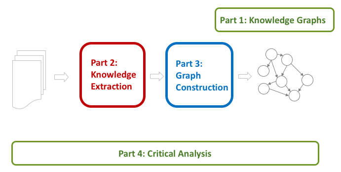

Mining Knowledge Graphs from Text
WSDM 2018 Tutorial (schedule)
February 5, 2018, 1:30PM - 5:00PM
Location: Ballroom Terrace (The Ritz-Carlton, Marina del Rey)
Jay Pujara, Sameer Singh
Knowledge graphs have become an increasingly crucial component in machine intelligence systems, powering ubiquitous digital assistants and inspiring several large scale academic projects across the globe. Our tutorial explains why knowledge graphs are important, how knowledge graphs are constructed, and where new research opportunities exist for improving the state-of-the-art. In this tutorial, we cover the many sophisticated approaches that complete and correct knowledge graphs. We organize this exploration into two main classes of models. The first include probabilistic logical frameworks that use graphical models, random walks, or statistical rule mining to construct knowledge graphs. The second class of models includes latent space models such as matrix and tensor factorization and neural networks. We conclude the tutorial with a critical comparison of techniques and results. We will offer practical advice for novices to identify common empirical challenges and concrete data sets for initial experimentation. Finally, we will highlight promising areas of current and future work.
Our goal is to present an accessible and structured overview of the existing approaches to extracting candidate facts from text and incorporating these into a well-formed knowledge graph. Our approach includes identifying the common themes and challenges in the area, and comparing and contrasting the existing approaches on the basis of these aspects. We believe such a unifying framework will provide the necessary tools and perspectives to enable the newcomers to the field to explore, evaluate, and develop novel techniques for automated knowledge graph construction.
Outline (with draft slides)

Part 1: Knowledge Graph Primer [ Slides ]
- What is a Knowledge Graph?
- Why are Knowledge Graphs Important?
- Where do Knowledge Graphs come from?
- Knowledge Representation Choices
- Problem Overview
Part 2: Knowledge Extraction Primer [ Slides ]
- NLP Fundamentals (tagging, parsing, named entity recognition and entity resolution)
- Learning knowledge extractors
- Scoring extracted knowledge
- Categories of IE techniques
- Compositional models: Knowledge fusion
Part 3: Knowledge Graph Construction
- Graph construction overview
- Probabilistic Models [ Slides ]
- Motivation
- Graphical models
- Random walk approaches
Coffee Break
- Embedding Techniques [ Slides ]
- Relation extraction techniques
- Matrix factorization
- Embedding entity pairs
- Graph completion techniques
- Tensor factorization
- Entity and relation embeddings
- Compositional models
- Relation extraction techniques
Part 4: Critical Overview and Conclusion [ Slides ]
- Summary
- Success stories
- Datasets, tasks, softwares
- Exciting active research
- Future research directions